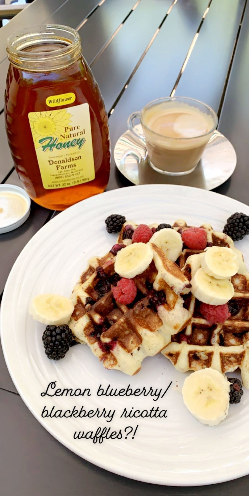
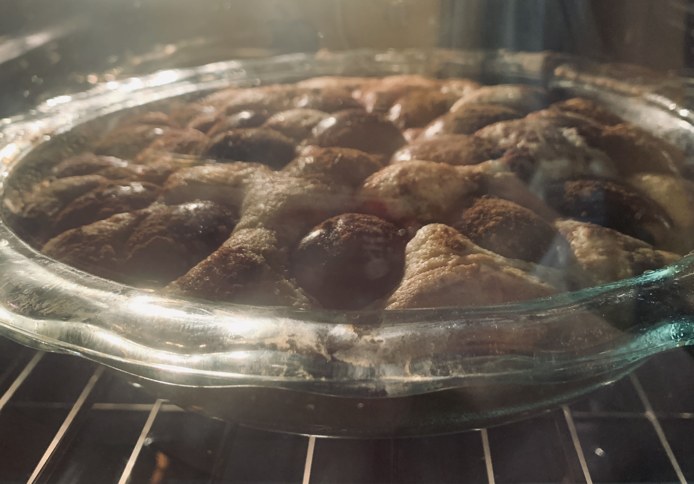
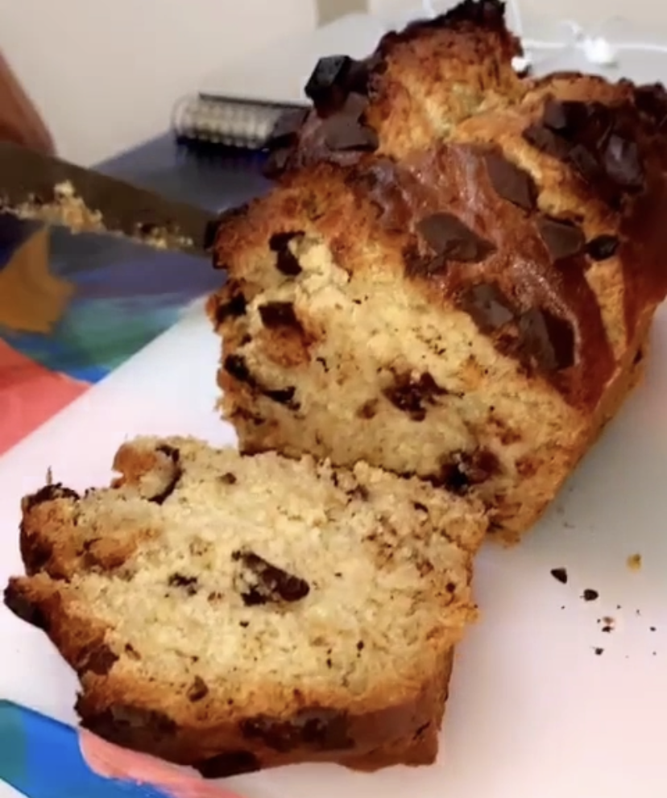
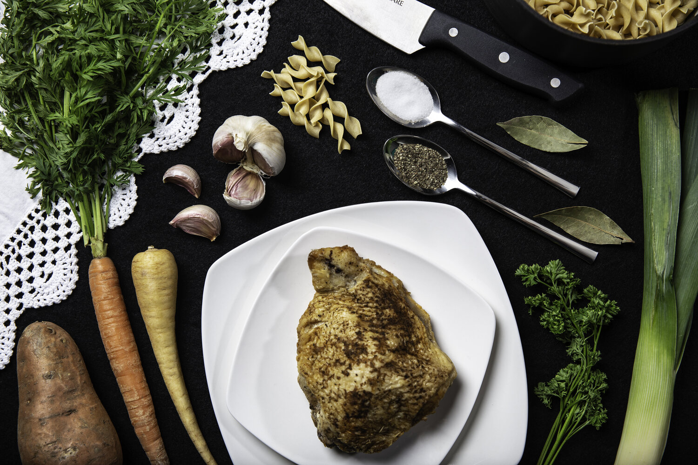

|  | Breakfast & Brunch | Pictured are our Lemon bluberry ricotta waffles topped with fresh fruit and farm fresh honey. Paired best with a morning latte. |
Desserts - | Pictured is our King Arthur Prune Plum Cake. It is perfect for a cold fall day and for those who love tart and sweet pastries. |
 |
 |
- Lunch | Pictured is our "Special Noodles" recipe... GF Pasta mixed in with sauted vegetables and chili pepper flakes on top for spice. |
Snacks - | Pictured is our Chocolate Chip Banana Bread ready to fill your midday slump needs with a boost of energy. |
 |
|  | - Dinner | Pictured is our "Special Chicken" recipe... Pair our favorite chicken recipe with fresh veggies from your garden or the market. Photo Credits: Hannah Frankel |